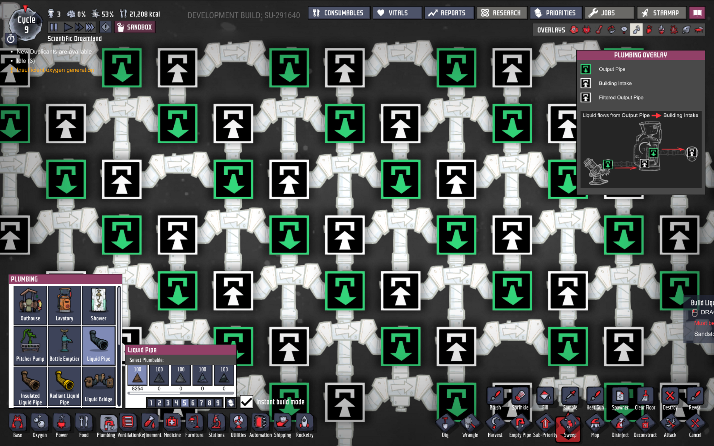
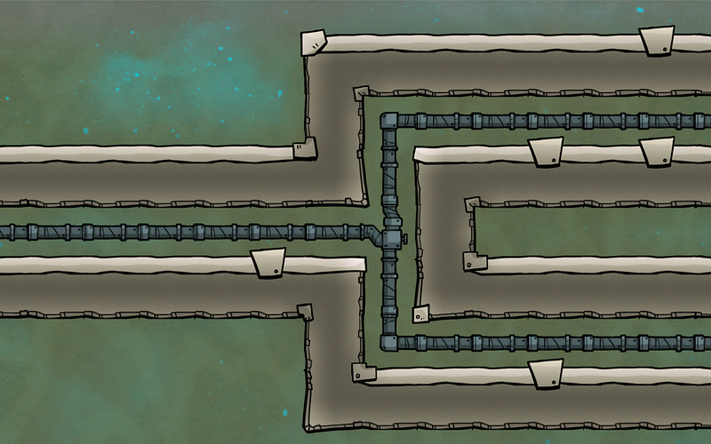
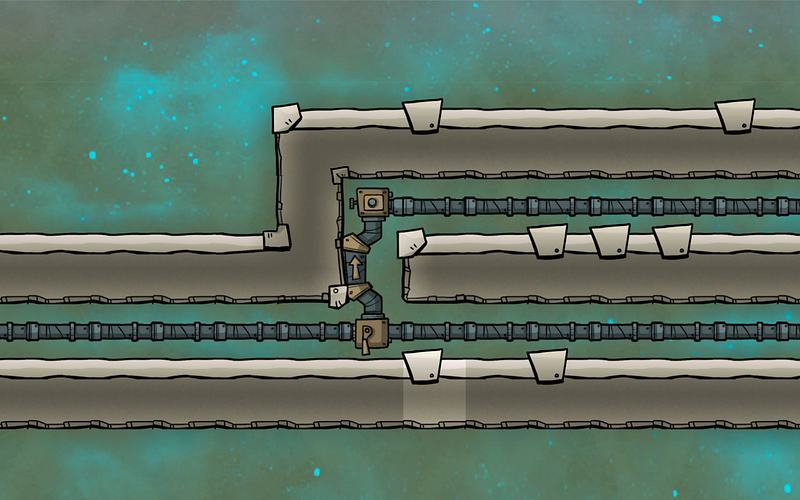
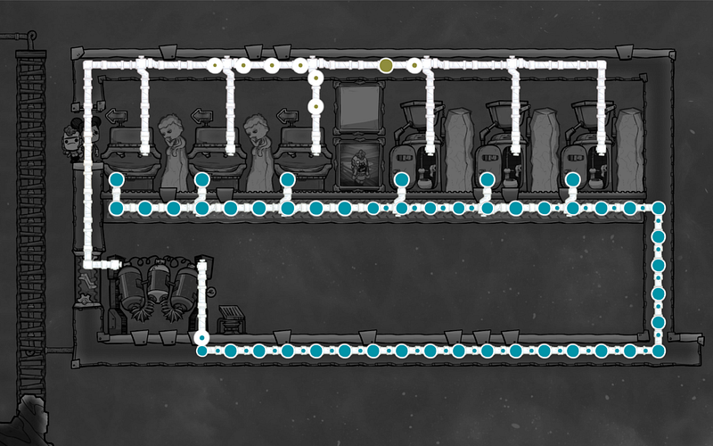
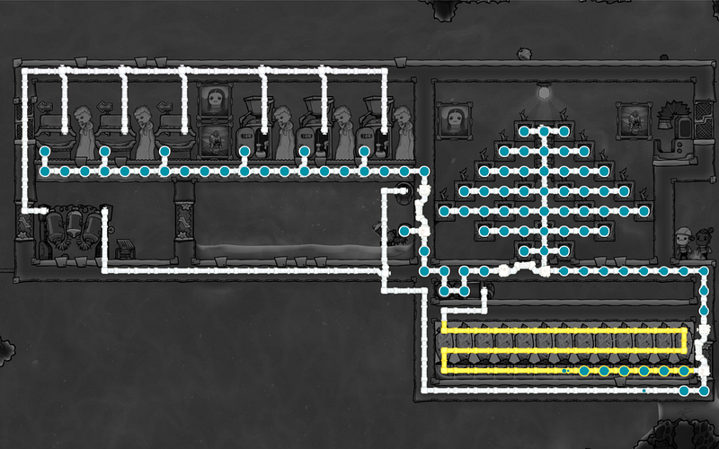

配管マスターへの道（ブリッジによる分岐編）
配管マスターへの道（ブリッジによる分岐編）

Oxygen Not Includedにおいて、ゲーム中盤で加速度的に難易度が増してくるのが、気体・液体を目的への場所へと運ぶための配管だ。本記事では配管を正しく、そして効率よく設置するための情報をまとめる。
本記事で表記を統一するために特段明記しない限りすべて液体を扱ってるものとするが、気体でも基本は一緒である。
ゲームを始めた瞬間はブリッジはあくまでパイプが交差するときに使うもの、という認識かもしれないが、実はブリッジには様々な特殊な仕様がある。
その中で今回取り上げるのは丁字配管時の優先順位だ。
パイプによる丁字配管
配管時に水流を２方向に分岐したい場合、これを通常のパイプ二つで分岐するのと、ブリッジとパイプで分岐する方法が考えられる。

通常のパイプで分岐する場合、流入する内容物は分岐部分でラウンドロビン形式でそれぞれの方向に分岐される。
ここで注意すべきなのは二点。
まずこの方法だと、流入してきた水量がパイプの最大流量だったとしても、分岐後のパイプは50%のキャパシティしか利用できないこと。内容物の消費側がたくさんのリソースを欲してるときにはキャパシティが使いきれないのはよくない場合がある。
もう一つは水流が通るパイプはあくまで順番に選ばれる、という点だ。例えば10kg、100kg、10kg、100kg…という順番で液体が送られてくる場合、55kgずつ両方のパイプに分岐されるのではなく、片方には10kg、片方には100kgという不公平な割り当てがされるということだ。
この際、どちらが多くなるか、はあくまで運なので、確実に内容物を送り届けたい場合は微妙な選択となる。
ブリッジとパイプによる分岐
ところが分岐の片側をブリッジ、片側をパイプにする設計の場合、すべての液体はまず、ブリッジのほうに流れていく。

ブリッジ側のパイプが分岐部分まで完全に詰まった時のみ、通常パイプの側に液体がながれる。
つまり、ブリッジ側が最優先となり、そこが使えないときの排水弁として通常パイプが機能するわけだ。
この方式をまず最初に使うことになるのは循環式トイレを作るときだろう。

循環式トイレとは、水洗トイレから排出した汚水を浄水器を通し、そこから得られる真水をまたトイレに戻す方式のトイレである。
この方式を用いる際に気をつけなければいけない点は、水洗トイレは排出のために使う真水の倍程度の汚水を排出すると言うことだ。
つまり、トイレ→下水管→浄水器→上水管→トイレという逃げ場のないループを作ると、いつかはすべてのパイプが最大流量の限界に達してしまい、排水すら出来なくなるということである。
このため、通常は排水溝を作り、そこに汚水ないし真水を排水しておく。そこからさらにポンプを使い、循環システムの中に戻す。
こうすることによりパイプが満杯になることは避けられるが、それでもまだ水の総量が増え続けることには変わりないので、いつかは排水溝が溢れてしまうだろう。
これを避けるために浄水済みの真水を、たとえば作物のために使う（この真水は菌に汚染されているため、飲み水等には使わない方が良い）。
ただ、ここで通常パイプのみでトイレと作物とに分岐すると、真水が枯渇しつつある時にトイレ側に送られる水量がたりない可能性がでてくる。
トイレは事実上水を作っている装置なので、まずトイレに充分水が回っていることを保証する必要がある。
ここで、ようやくブリッジの登場となる。
真水を貯めた排水溝から水をくみ出す際に、トイレ側にブリッジを使い、作物側に通常パイプを使う。これで、水が足りなくなった場合は作物が育たなくなるが、トイレが使えない、という状態は回避することができる。

こちらが一応の完成形。中央のポンプからくみ出された真水は、まずブリッジ側に移動しようとする。そのため上部のトイレに最初水が送り出される。
トイレ側が満タンになり、それ以上水が通せなくなると初めて右側の作物方面にいく。基本はそのまま水を渡せばよいだけなのだが、この真水は40℃弱まで温度があがっているので一旦冷やしておき、そのご作物におくられる。多すぎる分の水は凍る前に排水溝のほうに戻される。
次回は結合等をした際に正しく水流が流れるための設計について